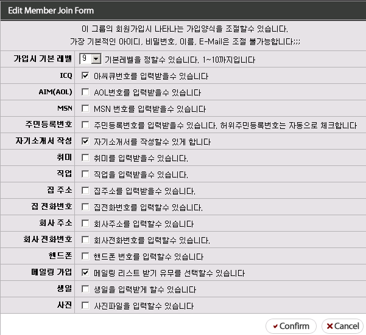
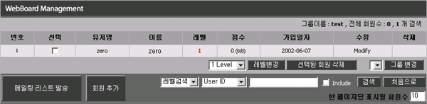
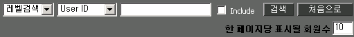
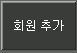
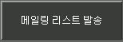
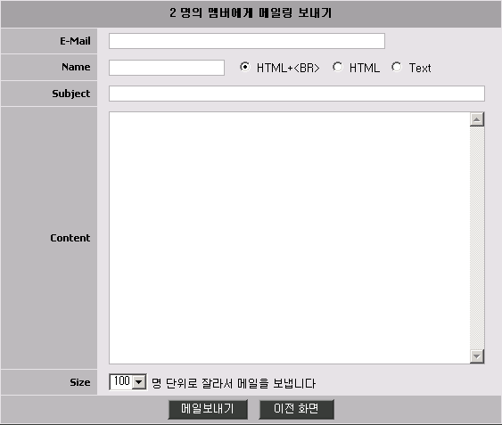
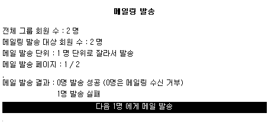
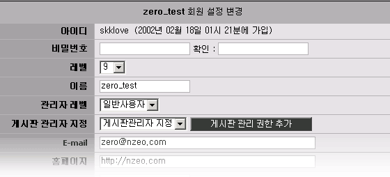
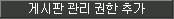
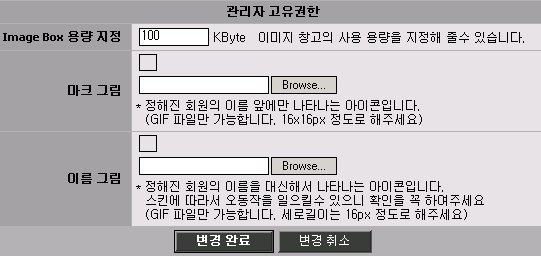

|
회원관리/ 가입폼 설정 이제 그룹 기능중에서 회원관리와 가입폼을 설정하는 방법에 대해서 알아보도록 하겠습니다.
1. 가입폼 관리 1. 가입폼은 회원가입을 받을때 입력받을수 있는 항목을 지정할수 있습니다. 1. 다만 아이디, 비밀번호, 이름, E-mail의 경우에는 기본적으로 지정이 됩니다.  1. 위의 항목을 보시면 바로 이해가 되실거라고 생각합니다. 1. 가입시 기본 레벨의 경우 회원 가입이 되었을때 기본으로 부여되는 레벨을 의미합니다. 1. 만약 회원가입을 하더라도 비회원과 같이 적용이 되게 하고 따로 회원레벨을 올리시려면 1. 기본 레벨을 10으로 하시면 됩니다. 1. 너무 간단해서 바로 아시겠죠?
2. 회원관리  2. 위의 화면은 회원 관리 목록입니다. 2. 가입된 회원의 기본적인 현황이 나타나고 수정/삭제 버튼이 있습니다. 2. 기본 최고 관리자는 삭제가 불가능합니다. 2. 위의 목록에서 선택 항목은 여러명을 선택하여 레벨변경, 그룹변경, 회원삭제를 일괄적으로 2. 할수 있습니다. 2. 그럼 각 기능을 나누어서 보도록 하겠습니다.
2. 선택된 회원들의 정보를 변경하는 메뉴입니다. 2. 선택을 하였을 경우에 일괄적으로 레벨/그룹 변경과 회원 삭제를 할수 있습니다.
 2. 회원의 정보를 이용해서 회원 검색을 할수 있습니다. 2. 4.1 에서는 더 자세히 검색을 할수 있습니다. 2. 기본적으로 이해가 되실것이기에 Include 에 대해서 설명하겠습니다. 2. 만약 회원 아이디가 zero 라는 회원을 검색할때 2가지의 방법이 있습니다. 2. 완전히 아이디가 zero인 회원과 zero 앞뒤에 다른 문자가 붙어 있는 회원을 찾는 방법입니다. 2. 만약 완전히 일치되는 회원을 찾고 싶다면 Include에 체크를 하지 않으시면 됩니다. 2. a_zero, b_zero_c 등의 검색어가 포함된 회원을 찾고 싶다면 Include에 체크를 하시면 됩니다.
 2. 위의 회원 추가 버튼은 관리자가 임의로 회원을 등록할수 있는 기능입니다 2. 주민등록번호가 기타 가입시 꼭 기입하여야 할 것도 하지 않을수 있습니다
 2. 위의 메뉴는 회원들에게 메일링을 보내는 기능입니다. 2. 만약 검색을 하였거나 따로 선택을 한경우 그 대상자에게만 메일링을 발송하며, 그렇지 않다면 2. 전체 그룹에 속한 회원에게 메일링을 발송합니다.  2. 메일링 방송을 클릭하면 위와 같이 메일 내용을 입력하는 화면이 나타납니다. 2. HTML을 이루어진 메일링을 보내시려면 HTML에 체크하시고, 단순한 HTML을 사용하며 2. 자동 줄바꿈을 원하실경우에는 HTML+<BR> 을 선택하시면 됩니다. 2. 제로보드 4.1 pl2부터는 단위별로 메일 대상자를 구분해서 메일링을 보내고 있습니다 2. 수백, 수천명 이상의 회원에게 메일을 보내게 되면 서버 부하로 인하여 중도에 실패할수 있습니다 2. 보통 100명 단위가 제일 적당하며 서버의 자원현황에 따라서 적당히 조절하세요. 2. 새벽등의 사용자가 없는 시간에 메일을 보내는 것이 좋습니다  2. 메일링을 보내게 되면 위와 같이 정해준 단위로 메일을 발송하며, 다음 대상자에게 보내는 버튼이 생기게 됩니다
이제 회원의 정보 수정에 대해서 설명하도록 하겠습니다. 회원의 정보 수정에는 회원이 입력한 정보에 대한 수정과 관리자 고유권한이 있습니다. 그럼 두가지를 나누어서 보도록 하겠습니다.
- 회원이 입력한 정보에 대한 수정  - 위의 메뉴는 회원이 입력한 정보에 대한 수정과 레벨의 변경을 할수 있습니다. - 다른 기능은 바로 이해가 되시리라 보고, 게시판 관리자 지정에 대해서 알아보겠습니다. - 게시판 관리자 지정은 해당 게시판에 대해서 그 회원이 모든 권한을 가지는 기능입니다. - 제로보드에서는 레벨보다 우선한 최고/그룹 관리자 기능이 있는데, 이 기능은 다른이들에게 - 주기에는 위험하기에 게시판 별로 회원을 관리자로 임명할수 있습니다. - 한 회원당 여러개의 게시판 관리가 가능합니다. - 원하는 게시판을 목록에서 선택한후  버튼을 누르시면 됩니다.
- 관리자 고유 권한  - 4.1에서 추가된 기능입니다. - 각 기능에 대해서 알아보도록 하겠습니다. - - Image Box 용량 지정 : 4.1부터 이미지 박스 기능이 생겼습니다. - - Image Box 용량 지정 : 이 기능에 대한 자세한 설명은 기능 설명 메뉴를 참조하십시오. - - Image Box 용량 지정 : 기본적으로 가입된 회원에 대해서 100kb의 이미지 창고 용량을 제공합니다. - - Image Box 용량 지정 : 만약 우수한 회원등에 대해서 더 많은 용량을 제공하고자 할 경에는 용량을 KByte - - Image Box 용량 지정 : 단위로 올려줄수 있습니다.
- - 마크 그림 : 4.1 부터 추가된 기능입니다. - - 마크 그림 : 우수 회원, 또는 특별한 회원들에게 글쓴이 이름앞에 나타날 마크를 지정할수 있습니다.
- - 이름 그림 : 4.1 부터 추가된 기능입니다. - - 이름 그림 : 글쓴이의 이름을 Text 대신 입력된 이미지로 대체시켜줍니다. - - 이름 그림 : 특별해 보이고 싶은 회원등에 대해서 이름 그림을 입력시켜 주실수 있습니다. - - 이름 그림 : 위의 기능은 오직 관리자만 가능한 기능입니다.
|